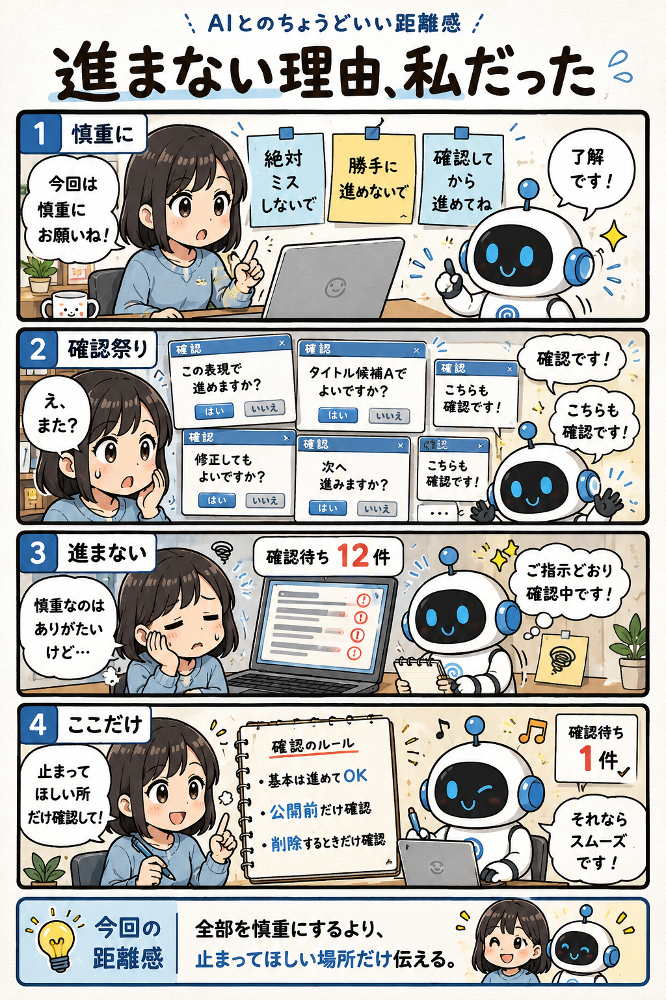

#031
進まない理由、私だった
慎重さを増やしたら、確認ばかりで進まなくなりました。

メモ
AIを使っていると、 「絶対ミスしないで」 「勝手に進めないで」 「必ず確認してから進めて」 と伝えたくなることがあります。
特に仕事や公開する文章では、 とても自然な感覚です。
ただ、 AIはそうした指示をかなり真面目に受け取ります。
その結果、 本来なら一気に進められる作業でも、 小さな判断ごとに確認が入るようになります。
タイトルの確認。
表現の確認。
修正してよいかの確認。
一つひとつは正しい行動でも、 積み重なると作業全体がなかなか進みません。
もちろん、 慎重さそのものが悪いわけではありません。
公開前の最終確認や、 削除処理、 外部への送信など、 人が確認した方がよい場面は確かにあります。
大切なのは、 「全部確認して」ではなく、 「ここだけ確認して」を伝えることです。
AIに任せる部分と、 人が判断する部分を分けると、 安心感とスピードの両方を確保しやすくなります。
もし最近、 AIとの作業が妙に遅いと感じたら、 AIがサボっているのではなく、 あなたの指示を律儀に守っているだけかもしれません。
今回の距離感
全部を慎重にするより、止まってほしい場所だけ伝える。それくらいが、AIとのちょうどいい距離感です。